오랜 시간 사랑받는 웰메이드 의류에서 영감받은 Polo Ralph Lauren은
러기드 스타일과 학문적 전통의 세련미가 절묘하게 어우러지는
영국의 테일러링 유산이 살아있는 스코틀랜드의 스타일을 선보입니다.
메인슬라이드
폴로 랄프로렌
신난다
Polo ralph lauren
season

-
2023 s/s
“미국 서부 해안의 자연미와 문화적 유산, 화려한 매력은 영감이 되었습니다.
캘리포니아는 영원한 꿈의 땅이며, 거친 해안과 레드 카펫이라는 상반된 매력이 있습니다.
처음으로 저는 여기에서 살고 싶은 꿈을 반영하여, 항상 추구해온 삶의 방식,
즉 불굴의 정신과 매력, 에너지, 영감이 어우러진 경험을 통해 제 세계를 공유합니다.” -
2022 f/w
“나의 FALL/WINTER 2022 컬렉션은 남성과 여성 모두를 위한 날렵한 테일러드 실루엣으로
대담하게 블랙과 화이트의 시대를 초월한 스타일을 기념합니다.
우리가 다시 뭉쳤을 때 뉴욕 MOMA의 상징적인 아름다움에 내포된 이 친밀한 환경에서
이 컬렉션을 공유하고 싶었습니다.” - 랄프 로렌 -
RLX x Clarus
CLARUS® 섬유는 버진 면과 재활용된 면을 재료로 하는 시중 최초의 특허를 받은플랫폼에서
제작되었습니다. 해당 기술로 탄생한 소재는 기능성을 위해 석유 기반의화석 연료를
사용하는 폴리에스터와 나일론 같은 플라스틱 기반의 합성 섬유와 비슷한 기능을 제공합니다.